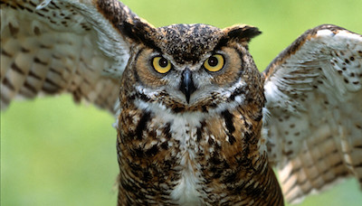
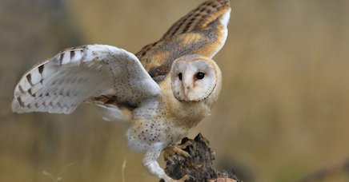

Wow! Based on your answers... You share similarities with the Great Horned Owl (Bubo virginianus) with a little bit of Barn Owl (Tyto alba)

The Great Horned Owl is an extremely brave and fearless nocturnal bird. The Great Horned Owl will frequently attack prey larger and heavier than itself, including cats, skunks, and porcupines. If their nest is being threatened, these owls will even attack large dogs and humans without a second thought. Both the Great Horned Owl and the Barn Owl are very strategic hunters, waiting until dusk/night to do their hunting. They both scout for prey from a perch and then will fly low to the ground and use their keen eyesight and hearing to locate and capture prey. Like these Owls, you prefer nighttime to daytime, you are fearless, willing to do whatever it takes for you, your friends and family, and you are intelligent and methodical in the actions you take throughout your life.
Click on Ceasar to Restart!